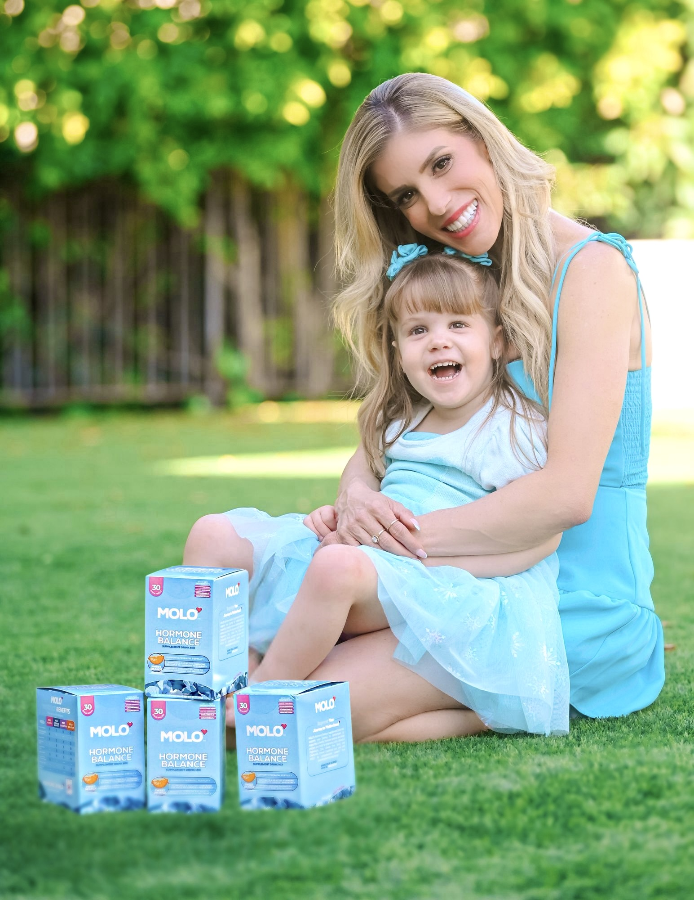
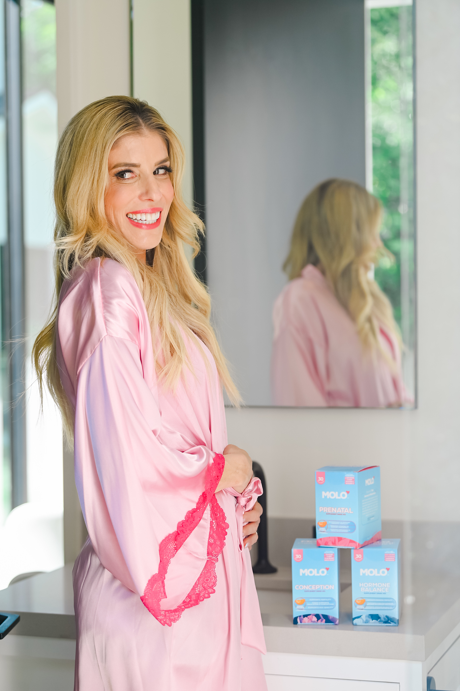

Our story
Two women made this. One wrote the protocol. One lived it.
Molo was built by a fertility nurse and a patient, which is an unusual way to start a supplement company and the reason this one is different. Everything here came out of a real clinic, for a real woman, before it was ever a product.
Empower your journey to motherhood.
Why we built it
Fertility support has two jobs. Almost nothing on the shelf does both.
The first job is the foundation: folate, vitamin D, the daily nutrients a pregnancy will draw on. That is what a prenatal is built for, and it matters.
The second job is the cycle you are in right now. Ovulation, ovarian health, cycle regularity. Very few prenatals were ever designed for any of it, which means a great many women are carefully covering half of what they meant to cover, and nobody has told them.
So women assemble the other half themselves, one reasonable purchase at a time, until there are seven bottles on the counter and a routine that is genuinely hard to keep. That gap is the entire reason Molo exists. Two drinks, both jobs, written by someone who does this for a living.

The patient
Rebecca Zamolo
At 29, ulcerative colitis with pre-cancerous changes cost Rebecca her colon and large intestine. Her doctors told her children were still possible, it would just be harder. She filmed that too, and thirty-two million people watched it.
When she and Matt decided to start a family in late 2019, they chose IVF deliberately, for the monitoring, because of what the surgery had done to her body. What followed was eighteen months of nightly injections, three egg retrievals, and two pregnancy losses. The second was a missed miscarriage at nine weeks, discovered at an appointment she had brought a camera to because it was supposed to be the announcement.
“Society tells us as women that we have to keep this private. So you have no support system. And then if something goes wrong, you feel alone, because you haven’t told anyone.”
She published that video anyway, on the exact date the announcement had been scheduled, to millions of people. That is the decision the whole brand comes from. Not the supplements. The willingness to say the thing out loud.
A year later, on her third round, from her last remaining female embryo, the one with the worst odds, she posted her daughter’s birth.
“She beat out all the odds. She had the least chance of being successful out of anything and she was the one that came through.”
The moment
After her second loss, her nurse asked her a question nobody else had.
“What are you taking?”
Rebecca said: a prenatal. Christina gave her a list, and told her to take it for three months.
Christina gave her a list, and told her to take it for three months.
“It was 14 giant horse pills and I took them every day because I wanted to get pregnant. I complained about it, but she told me that all her patients complain because it’s not fun.”
Rebecca Zamolo
“Once I got pregnant, I was happy to have gotten pregnant, but there had to be an easier way for women to find the right supplements that they need.”
The nurse
Christina Westbrook, MBA, MSN
In a fertility clinic, the nurse is the constant. She is the one running your bloodwork at seven in the morning, teaching you to give yourself the injection, calling with your numbers, and answering the question at nine at night that you did not want to put in an email. Christina has done that for thousands of women.
She holds an MBA and an MSN, she is the Chief Nursing Officer of a fertility clinic in Los Angeles, and she has held senior nursing roles across reproductive medicine for the better part of a decade.
Which means she has seen more real fertility routines than almost anyone, and she knows exactly where the distance opens between a protocol that looks right on paper and one a woman can actually keep for three months. Both Molo formulas came out of a list she wrote by hand for a patient. Neither started in a marketing meeting.
A career in fertility nursing
Spent inside fertility clinics, and now running nursing for one
Written for a patient, not a market
Both formulas trace back to a list she wrote by hand for one woman who needed it
Designed by women, for women
Two founders. One wrote the protocol, one lived it
The product
The same list. Two drinks instead of fourteen pills.
Christina wrote the protocol. Rebecca lived it, complained about it, took every pill anyway, and then said out loud that there had to be an easier way. Molo is what the two of them built next.
Ovulation carries myo-inositol and D-chiro-inositol at the 40:1 ratio the research uses, with Caronositol®, MenaQ7® K2, algal D3 and chelated zinc. Prenatal carries 600 mcg of folate in the active methylfolate form, with vitamin C, vitamin D, CoQ10 and ginger root.
Studied ingredient forms, third-party tested, made in the USA, no added sugar, and gentle enough to take every morning without dreading it. Two stick packs you stir into water, so the version you actually finish is the version you are on.
Why this matters
If this is your year, you are in a very large room.
1 in 6
adults worldwide experience infertility at some point
1 in 10
women of childbearing age have PCOS
12%
of women have difficulty getting pregnant or carrying to term
$10,000+
is a common out-of-pocket cost for fertility services, usually not covered by insurance
33%
of Americans have used fertility treatment or know someone who has
Most of the women in those numbers are handling it quietly, the way Rebecca did until she decided not to.

Empower your journey to motherhood.
Two jobs. One routine. Better outcomes.